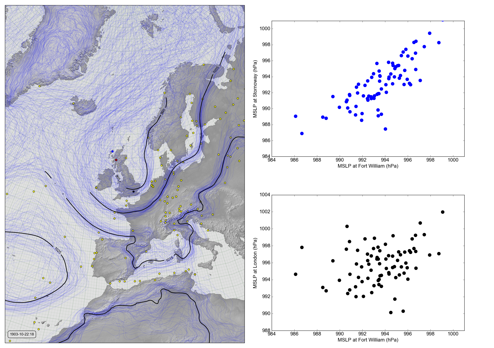

Linear relations¶

{kind=link}
MSLP at Fort William, Stornoway, and London (October 22nd, 1903 at 6pm).¶
The left panel is a Spaghetti-contour plot, with the red dot marking Fort William, the blue Stornoway, and the black London. The right panels are scatter plots of the mslp values at this point in time, across the 80 members of the 20CRv3 ensemble, comparing the value at Fort William with that at Stornoway (top), and the value at Fort William with that at London (bottom).
Code to make the figure¶
Collect the data (prmsl ensemble and observations from 20CR2c for 1903):
#!/usr/bin/env python
import IRData.twcr as twcr
import datetime
dte=datetime.datetime(1903,10,22)
twcr.fetch('prmsl',dte,version='4.5.1')
twcr.fetch_observations(dte,version='4.5.1')
Script to make the figure:
#!/usr/bin/env python
# UK region weather plot
# Pressures at Fort William and other spots
import math
import datetime
import numpy
import collections
import iris
import iris.analysis
import matplotlib
from matplotlib.backends.backend_agg import \
FigureCanvasAgg as FigureCanvas
from matplotlib.figure import Figure
from matplotlib.patches import Circle
import cartopy
import cartopy.crs as ccrs
import Meteorographica as mg
import IRData.twcr as twcr
import DWR
# Date to show
year=1903
month=10
day=22
hour=18
dte=datetime.datetime(year,month,day,hour)
# Landscape page
fig=Figure(figsize=(22,22/math.sqrt(2)), # Width, Height (inches)
dpi=100,
facecolor=(0.88,0.88,0.88,1),
edgecolor=None,
linewidth=0.0,
frameon=False,
subplotpars=None,
tight_layout=None)
canvas=FigureCanvas(fig)
font = {'family' : 'sans-serif',
'sans-serif' : 'Arial',
'weight' : 'normal',
'size' : 16}
matplotlib.rc('font', **font)
# UK-centred projection
projection=ccrs.RotatedPole(pole_longitude=177.5, pole_latitude=35.5)
scale=20
extent=[scale*-1,scale,scale*-1*math.sqrt(2),scale*math.sqrt(2)]
# Contour plot on the left
ax_map=fig.add_axes([0.01,0.01,0.485,0.98],projection=projection)
ax_map.set_axis_off()
ax_map.set_extent(extent, crs=projection)
# Background, grid and land
ax_map.background_patch.set_facecolor((0.88,0.88,0.88,1))
mg.background.add_grid(ax_map)
land_img_20C=ax_map.background_img(name='GreyT', resolution='low')
# Get the DWR observations within +- 15 hours
obs=DWR.load_observations('prmsl',
dte-datetime.timedelta(hours=12),
dte+datetime.timedelta(hours=12))
# Discard everthing except Fort William
obs=obs[obs.name=='FORTWILLIAM']
mg.observations.plot(ax_map,obs,lat_label='latitude',
lon_label='longitude',radius=0.15,facecolor='red')
# Add the observations from 20CR
obs_t=twcr.load_observations_fortime(dte,'4.5.1')
# Filter to those assimilated near the UK
obs_s=obs_t.loc[((obs_t['Latitude']>0) &
(obs_t['Latitude']<90)) &
((obs_t['Longitude']>240) |
(obs_t['Longitude']<100))].copy()
mg.observations.plot(ax_map,obs_s,radius=0.15)
# load the pressures
prmsl=twcr.load('prmsl',dte,version='4.5.1')
# For each ensemble member, make a contour plot
CS=mg.pressure.plot(ax_map,prmsl,
resolution=0.25,
type='spaghetti',scale=0.01,
levels=numpy.arange(875,1050,10),
colors='blue',
label=False,
linewidths=0.1)
# Add the ensemble mean - with labels
prmsl_m=prmsl.collapsed('member', iris.analysis.MEAN)
prmsl_m.data=prmsl_m.data/100 # To hPa
prmsl_s=prmsl.collapsed('member', iris.analysis.STD_DEV)
prmsl_s.data=prmsl_s.data/100
# Mask out mean where uncertainties large
prmsl_m.data[numpy.where(prmsl_s.data>3)]=numpy.nan
CS=mg.pressure.plot(ax_map,prmsl_m,
resolution=0.25,
levels=numpy.arange(875,1050,10),
colors='black',
label=True,
linewidths=2)
# Label with the date
mg.utils.plot_label(ax_map,
'%04d-%02d-%02d:%02d' % (year,month,day,hour),
facecolor=fig.get_facecolor(),
x_fraction=0.02,
horizontalalignment='left')
# Compare with Stornoway
target_lat= 58.21
target_lon= -6.38
fw_extent=[984,1001]
sw_extent=[984,1001]
lon_extent=[988,1004]
# Add this point to the map
rp=ax_map.projection.transform_points(ccrs.PlateCarree(),
numpy.array(target_lon),
numpy.array(target_lat))
ax_map.add_patch(matplotlib.patches.Circle((rp[:,0],rp[:,1]),
radius=0.15,
facecolor='blue',
edgecolor='blue',
alpha=1,
zorder=5))
ax_scp=fig.add_axes([0.55,0.55,0.39,0.39])
# x-axis
ax_scp.set_xlim(fw_extent)
ax_scp.set_xlabel('MSLP at Fort William (hPa)')
# y-axis
ax_scp.set_ylim(sw_extent)
ax_scp.set_ylabel('MSLP at Stornoway (hPa)')
# Ensemble values at Fort William
interpolator = iris.analysis.Linear().interpolator(prmsl,
['latitude', 'longitude'])
latlon=DWR.get_station_location(obs,'FORTWILLIAM')
ens_FW=interpolator([latlon['latitude'],
latlon['longitude']])
# And at Stornoway
ens_ST=interpolator([numpy.array(target_lat),
numpy.array(target_lon)])
ax_scp.scatter(ens_FW.data/100,ens_ST.data/100,
500, # Point size
'blue', # Color
marker='.',
edgecolors='face',
linewidths=0.0,
alpha=1,
zorder=5)
# Compare with London
target_lat= 51.51
target_lon= -0.13
# Add this point to the map
rp=ax_map.projection.transform_points(ccrs.PlateCarree(),
numpy.array(target_lon),
numpy.array(target_lat))
ax_map.add_patch(matplotlib.patches.Circle((rp[:,0],rp[:,1]),
radius=0.15,
facecolor='black',
edgecolor='black',
alpha=1,
zorder=5))
ax_scp2=fig.add_axes([0.55,0.05,0.39,0.39])
# x-axis
ax_scp2.set_xlim(fw_extent)
ax_scp2.set_xlabel('MSLP at Fort William (hPa)')
# y-axis
ax_scp2.set_ylim(lon_extent)
ax_scp2.set_ylabel('MSLP at London (hPa)')
# Ensemble values at London
ens_LN=interpolator([numpy.array(target_lat),
numpy.array(target_lon)])
ax_scp2.scatter(ens_FW.data/100,ens_LN.data/100,
500, # Point size
'black', # Color
marker='.',
edgecolors='face',
linewidths=0.0,
alpha=1,
zorder=5)
# Output as png
fig.savefig('lr+contour_%04d%02d%02d%02d.png' %
(year,month,day,hour))